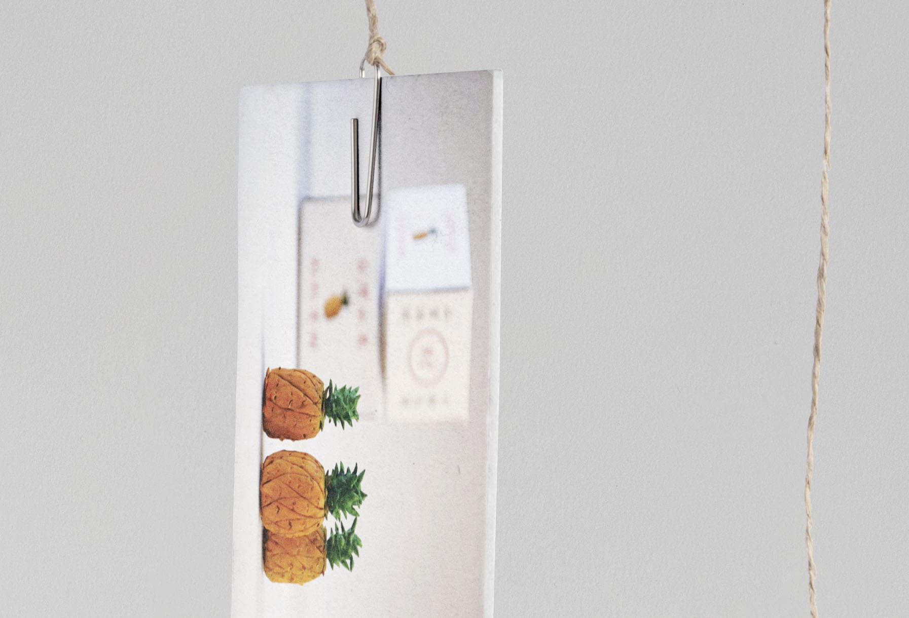
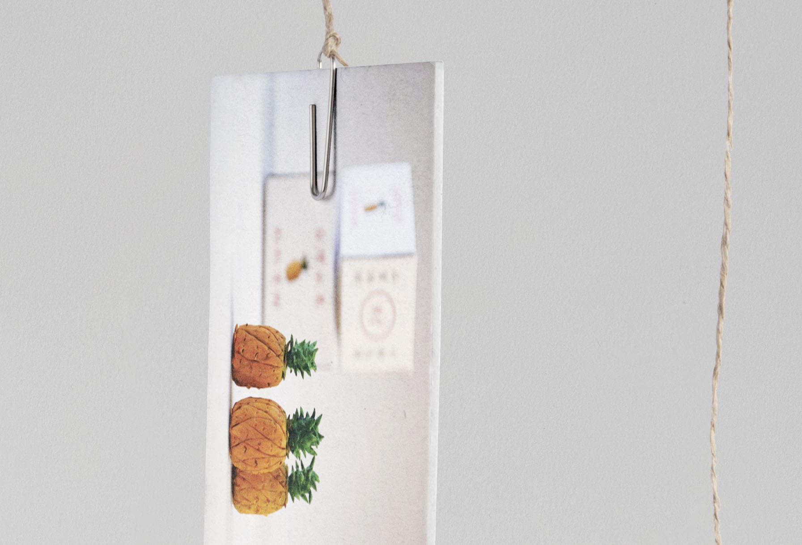

If you would like to collab or have any questions, give me a shout. → liuweijiun@gmail.com
PROJECT
Fruit Booth
Miniature Exhibition｜Traditional market in Taiwan
袖珍水果攤｜台灣傳統市集
DATE
July, 2015
EXHIBITION
台北商業大學 桃園校區 圖書館
DESIGNER
Weijiun | Dolly | Lulu | 佳瑩
● Fruit Booth in miniature： Pocket-sized fruit booth was made by resin clay including apples, bananas, watermelons, pineapples, etc. This was one of pocket-sized booths for an exhibition which also displayed other traditional booths we've seen in market. The exhibition aims to make Taiwanese be aware that these agriculture and fishing economy have nurtured millions of people in our territory. Everyone of us have to treasure our resources from the earth.
● 袖珍「水果攤」： 由樹脂土製成的袖珍水果攤，有蘋果、香蕉、西瓜、鳳梨等水果。 是為此次台灣傳統市集微型展覽的袖珍攤位之一， 其他也有魚攤、挫冰店等在市場上看的到的其他傳統攤位。 展覽旨在讓台灣人意識到，這些農業和漁業經濟培育了台灣數百萬人。 我們每個人都必須珍惜地球上的資源。
 


COPYRIGHT(C)2021-2022 WEIJIUN DESIGN All Rights Reserved.